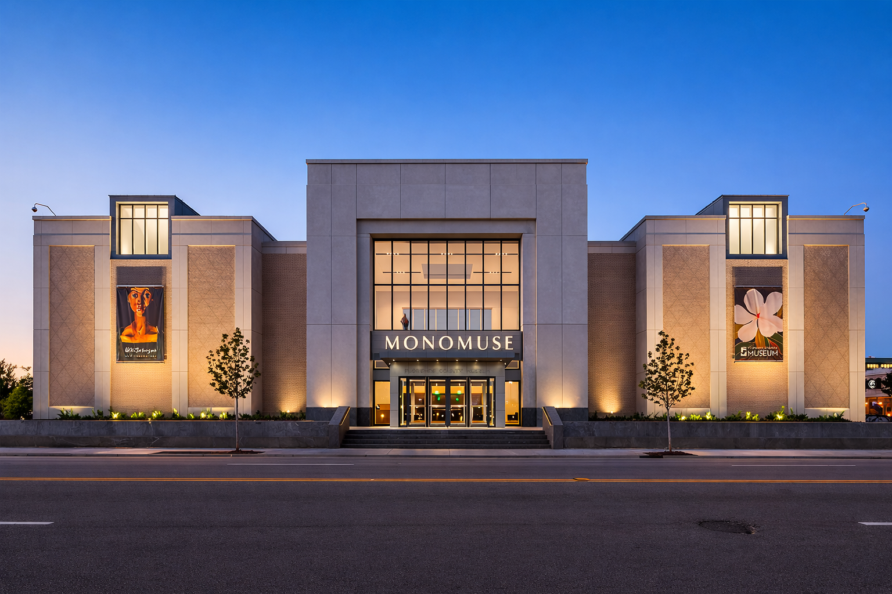

Our Mission
At MonoMuse, our mission is to explore the dynamic relationship between art, technology, and human creativity. We are dedicated to showcasing innovative exhibitions that challenge traditional notions of art and inspire visitors to engage with the transformative power of digital innovation. Through immersive experiences, interactive installations, and thought-provoking programming, we aim to foster a deeper understanding of how technology is shaping culture and everyday life. MonoMuse is a space for discovery, creativity, and connection, where visitors can explore new perspectives on the role of technology in art and society.
Milestones
- 2020: MonoMuse opens its doors
- 2021: Launch of interactive digital exhibit
- 2022: Expansion of virtual reality programming
- 2023: Introduction of AI-powered art installations